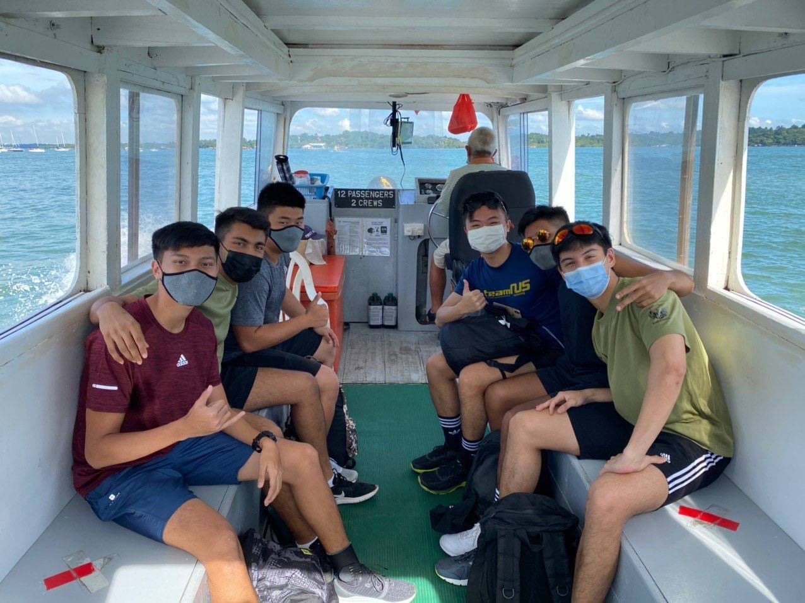
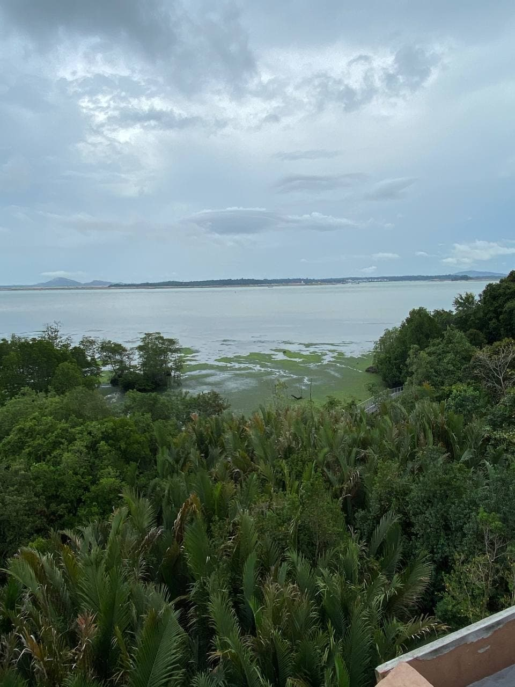
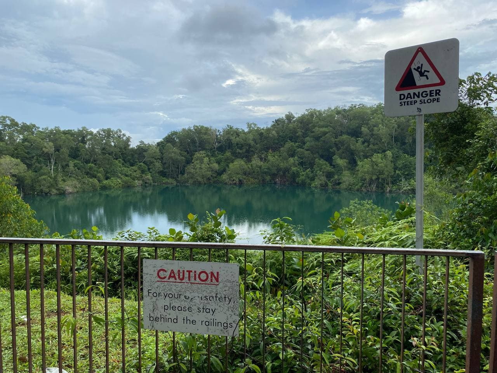
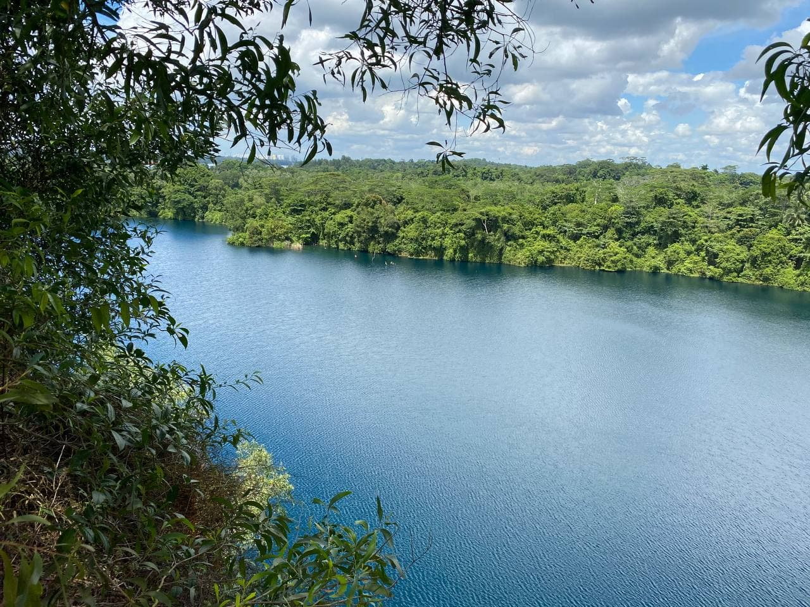

Discover one of Singapore's historial islands!
Lakes, cycling and hiking trails, sights and many more
Getting there:
In order to go to Pulau Ubin, you need to take a Bumboat
Changi Ferry Terminal which costs around $2 per person in cash
For more info on Pulau Ubin click here.

Sights to See:
Here are a few locations to visit in the Island



After reaching Pulau Ubin, we rented bicycles to explore the area and saw some of the nice scenery and nature
We tried skipping stones along the lake, went for a walk at the jetty and visited the museum.
While exploring parts of the forest, my friends and I spotted a tree with vines hanging from it.
So they decided to try and swing from it. Click the video below to see how it went.
We went to the beachside to attempt to fish but got caught in the rain instead.
A few of us cooked Maggi Mee under the shelter, but some had other ideas.